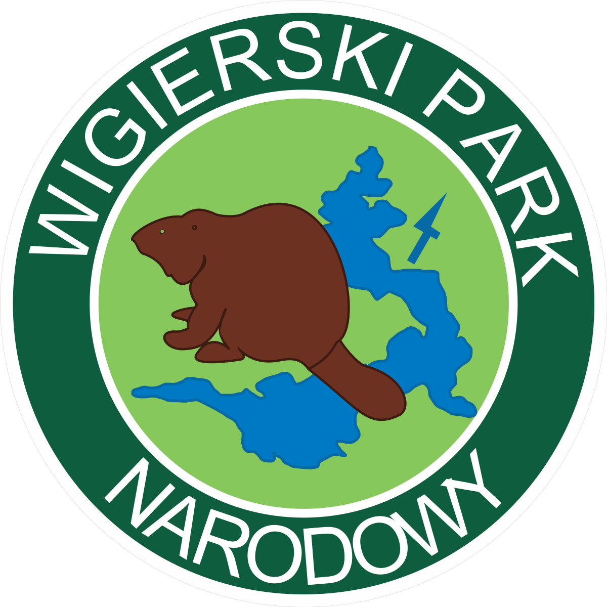

Wigierski Park Narodowy
Został powołany do życia w dniu 1 stycznia 1989. Obejmuje obszar 150,79 km² i jest jednym z większych parków w Polsce. Znajduje się w północno wschodniej części Polski, w województwie podlaskim, na północnym skraju Puszczy Augustowskiej. Symbolem parku jest bóbr na tle jeziora Wigry. Na jego obszarze znajdują się 42 jeziora, których łączna powierzchnia wynosi ponad 28 km². W centralnej części parku znajduje się jezioro Wigry o krętej i urozmaiconej linii brzegowej. Szczególnej ochronie podlega tutaj bóbr, którego populacja wynosi tu około 250 sztuk.